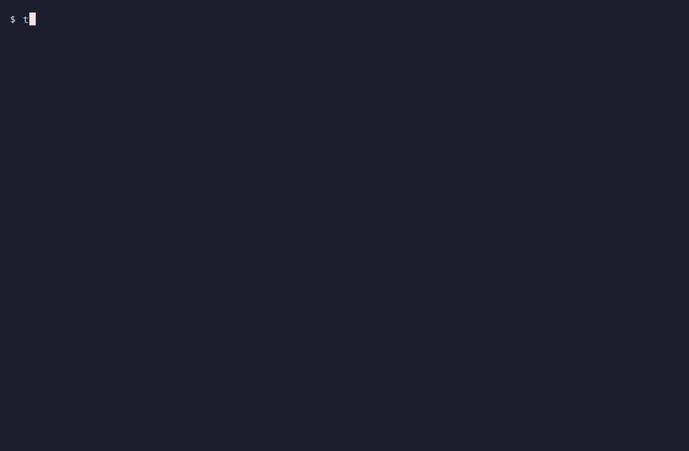

Subagent cache, 1h instead of 5m
~17% cheaper
Every Claude Code user's subagents cache for 5 minutes. An hour would have cost ~$4,146 less over the 30 days, not yet counted in the savings.
subagentPromptCacheTtl
token-max replays your Claude Code and Codex transcripts under other settings, at API prices, and shows which ones to change.
Run this:
curl -LsSf https://max.kixel.ai/run.sh | shWindows: irm https://max.kixel.ai/run.ps1 | iex.
It changes nothing without a yes. Works from the first release on; until then,
build it from source.
1,181,845 Claude Code, Codex and T3 Code requests at public API
prices. The savings are every change token-max doctor --defaults
would make for a user with no settings files, 2% of the spend: a third from the
main agent's cache, the rest auto memory and unused skills and tools. The subagent
cache saving is left out: on the plan profiles doctor can't yet tell which
settings T3 Code's sessions ran with.
~17% cheaper
Every Claude Code user's subagents cache for 5 minutes. An hour would have cost ~$4,146 less over the 30 days, not yet counted in the savings.
subagentPromptCacheTtl
~37% cheaper
A plan's included usage gets 1 hour, but API keys and usage credits get 5 minutes. An hour saves ~$519/mo.
promptCacheTtl
Both settings live in ~/.claude/settings.json. ~ marks
figures extrapolated over requests that could not be priced. Replayed
2026-11-17;
full results.
token-max doctor run on synthetic transcripts